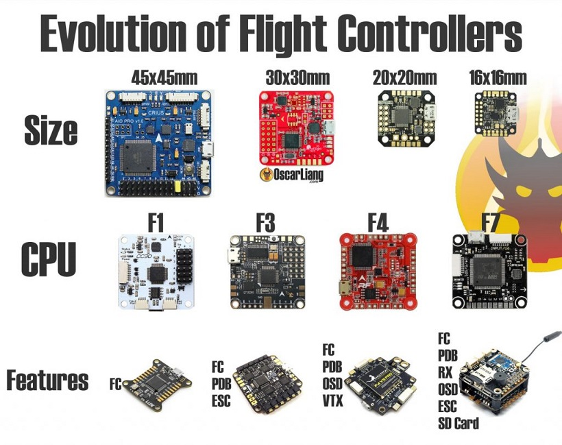
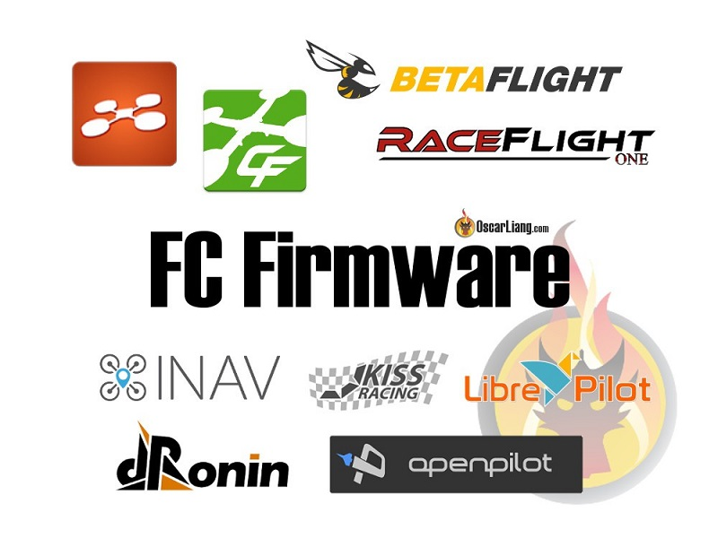
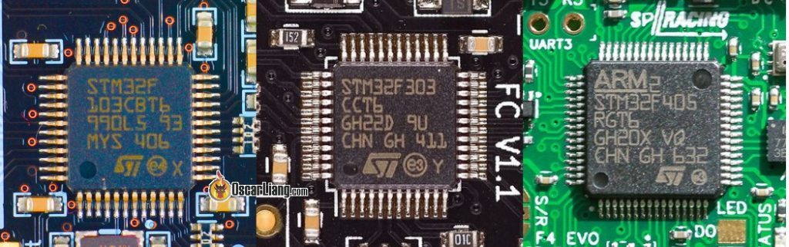
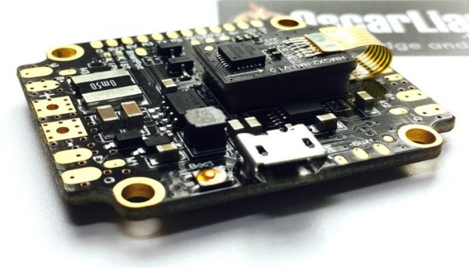
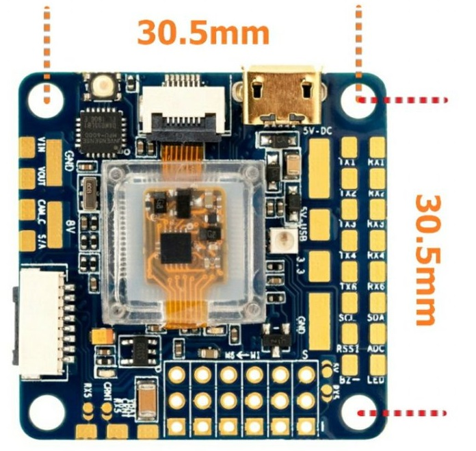

四轴之所以能够流行起来，全仰仗于飞控技术的提升
飞控是飞机的大脑，它基本上就是一块集成了很多传感器的大脑。它接收飞手发送的指令，并通过控制马达让飞机达到预期姿态。
几乎所有的飞控都内置惯性导航系统IMU.一些高级的点飞控还会内置气压传感器和电子指南针。除了内置的传感器以外，飞控还可以外接很多其他外围设备，比如GPS、LED、雷达等。

飞控固件
固件就是在硬件上跑的飞控软件，一般情况的不同的硬件对应有不同的固件，但是有些流行的固件也可以同时兼容好多种硬件。比较流行的固件有Betaflight、PX4、Cleanflight、KISS、Raceflight等。
由于飞控理论相对来说相对来说还是开放的，很多固件也都是开源的，所以对于本身飞行算法来说其实并没有什么好烂之分。在选择的时候主要考虑固件的成熟度，扩展能力，以及上位机配套软件的便利性。由于每个固件的上位机软件区别还是比较大的，所以有一定的学习成本需要考虑进去。

如果你不知道怎么选的话这里有个建议就是，单纯飞穿越机选择Betaflight，如果想深入学习飞控算法并在将来尝试进行飞控开发，选择PX4。
处理器
这里的处理器指的是飞控上面主MCU，飞控的MCU一般会选择stm32系列，所以会有F1, F3, F4 and F7等。目前来说F1的性能已经不太够用了，现在主流的是F3和F4的MCU，当然高端点的飞控就直接上F7了，尤其是PX4的高级飞控。
| F1 | F3 | F4 | F7 |
|---|---|---|---|
| 72MHz | 72MHz | 168MHz | 216MHz |

接口
这里说的接口主要说的是可以外接外围设备的接口，一般有UART、IIC、SPI等。接口的数量受所选的MCU所限制，最终由硬件电路决定留出多少接口，有些飞控为了减少板子尺寸并没有把所有可用的接口给预留出来。下表是每种MCU可以支持的串口数量。
| F1 | F3 | F4 | F7 |
|---|---|---|---|
| 2 UART’s | 3-5 UART’s | 3-6 UART’s | 7+ UART’s |
接口数量决定了可以外接多少个外围设备，可以根据实际情况进行选择。
另外，SPI能够达到的速度比IIC好高，IIC最大只能达到4KHz。而且SPI是全双工的，所以在SPI和
惯性导航芯片
典型的惯性导航芯片可参考下表
| IMU | 支持的通讯协议 | 最大的采样频率 |
|---|---|---|
| MPU6000 | SPI, i2c | 8K |
| MPU6050 | i2c | 8K |
| MPU6500 | SPI, i2c | 32K |
| MPU9150* | i2c | 8K |
| MPU9250* | SPI, i2c | 32K |
| ICM20602 | SPI, i2c | 32K |
| ICM20608 | SPI, i2c | 32K |
| ICM20689 | SPI, i2c | 32K |
*其中MPU9150 相当于MPU6050加AK8975指南针，而MPU9250相当于MPU6500加AK8975。
目前来说，使用最广泛的是MPU6000，虽然说它的采样频率只有8kHz，但是它的抗噪鲁棒性很好，一般不推荐使用MPU6500和MPU9250，它们虽然采样频率很快但是采样出来的数据噪声也很高。
采样频率本身是个双刃剑，如果在干净的电源下面，采样频率越高，数据越平滑。但是如果是带有电调和马达干扰的电源下面，采样频率过高并不能带来好处，数据可能比低采样频率采出来的数据更糟糕。
有些飞控会单独把惯性导航模块外置，然后垫个海绵垫进行缓冲。如果没有外置的话，最好在飞控安装的时候将整个飞控安装在海绵垫上面。

功能模块
飞行控制算法是飞控的基本功能，但是还有很多其他的功能也很值得考虑。
OSD
OSD能将飞行信息显示在FPV屏幕上，比如电池电压，飞行时间。摄像头将图像数据传入飞控，飞控会将飞行信息跟图像数据融合并一并发给图传，图传可以将带有OSD的信息发回FPV显示器显示。
有些还可以支持通过OSD调整参数。
电流计
飞控能够通过电流计能够计算出当前剩余的电量，这比单单测量电池电压要好的多。它能更准确的让你留出降落时间。
黑盒子
黑盒子听起来高达上，其实这里只是一个SD卡，飞控可以把飞行数据写到SD卡上方便后面的分析。这个对于调节PID来说是特别有用的。
安装尺寸
安装尺寸在写机架的时候也有聊到过，主要是为了保证飞控能够准确的安装在飞机上。
通用的飞控尺寸有 30.5×30.5mm, 20x20mm和16x16mm等. 5寸浆或者更大的机架一般使用30.5×30.5mm的飞控，更小点的使用20x20mm的飞控，而16x16mm也在100mm以下的机架上流行起来了。

Comments
There are no comments yet.